Fresh-process model transport: selected views
Eight models, twelve soma channels. Actual membrane output with actual input overlay; complete sample plotting and native tick zoom. One declared transport pattern per model. Diagnostic transport verification, not classification or LT inertia experiment. Full report cache on M40; primary data preserved separately in Git. Visual review pending.
Branch_N0_COn $.Soma1.SumPotential overview
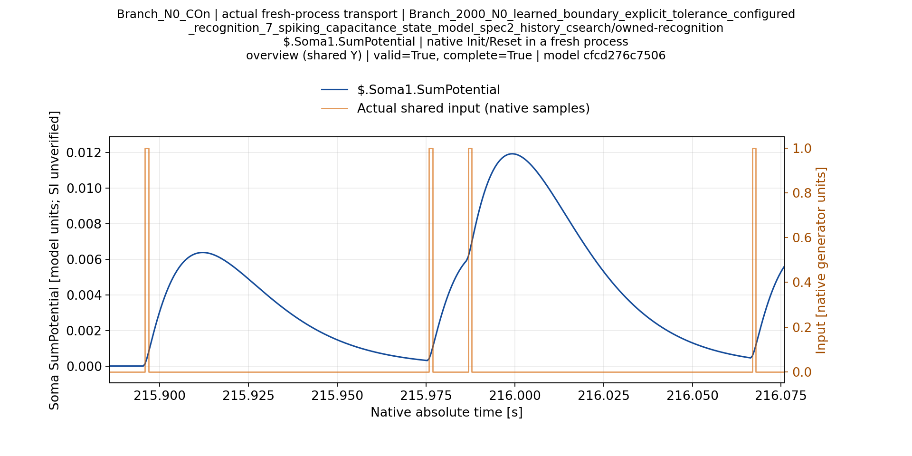
Branch_N0_COn $.Soma1.SumPotential zoom-001
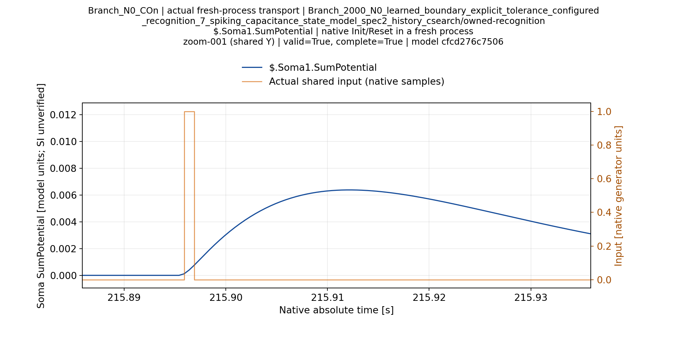
Branch_N0_COff $.Soma1.SumPotential overview
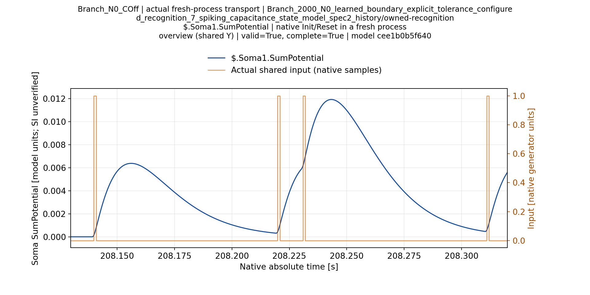
Branch_N0_COff $.Soma1.SumPotential zoom-001
Branch_N1_COn $.Soma1.SumPotential overview
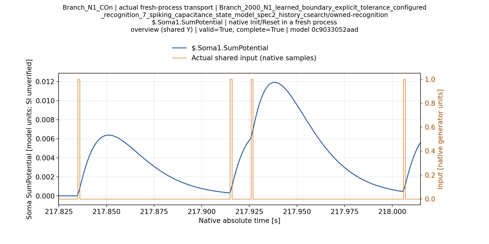
Branch_N1_COn $.Soma1.SumPotential zoom-001
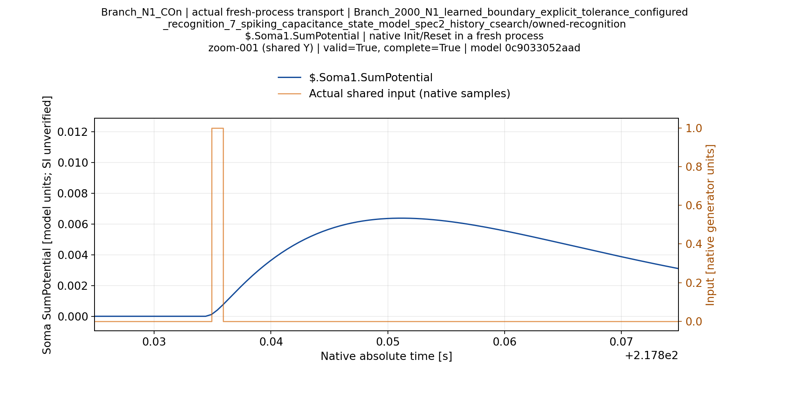
Branch_N1_COff $.Soma1.SumPotential overview
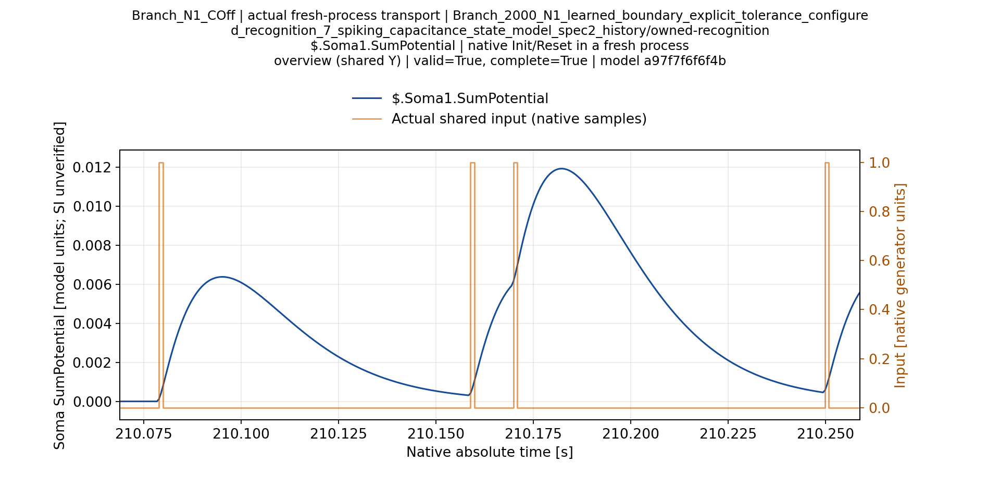
Branch_N1_COff $.Soma1.SumPotential zoom-001
Classic_N0_COn $.Soma1.SumPotential overview
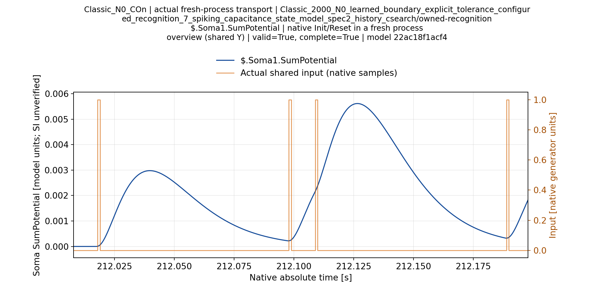
Classic_N0_COn $.Soma1.SumPotential zoom-001
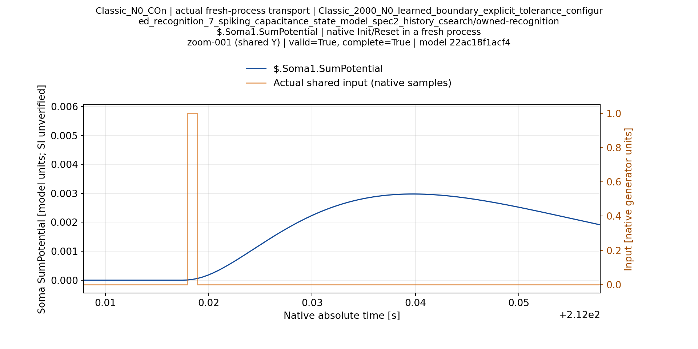
Classic_N0_COn $.Soma2.SumPotential overview
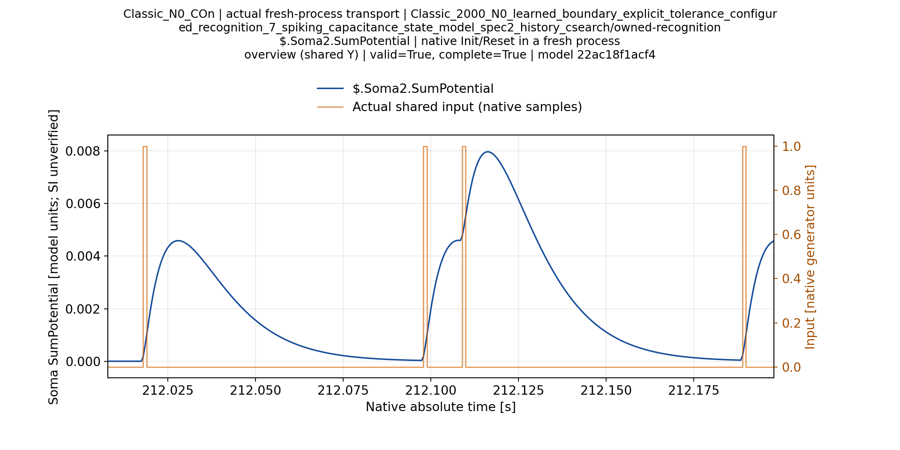
Classic_N0_COn $.Soma2.SumPotential zoom-001
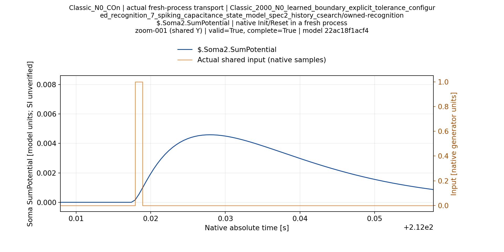
Classic_N0_COff $.Soma1.SumPotential overview
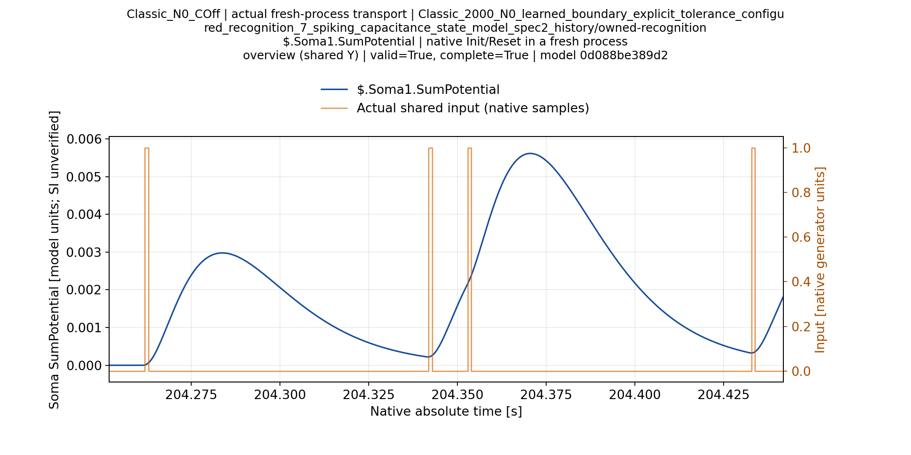
Classic_N0_COff $.Soma1.SumPotential zoom-001
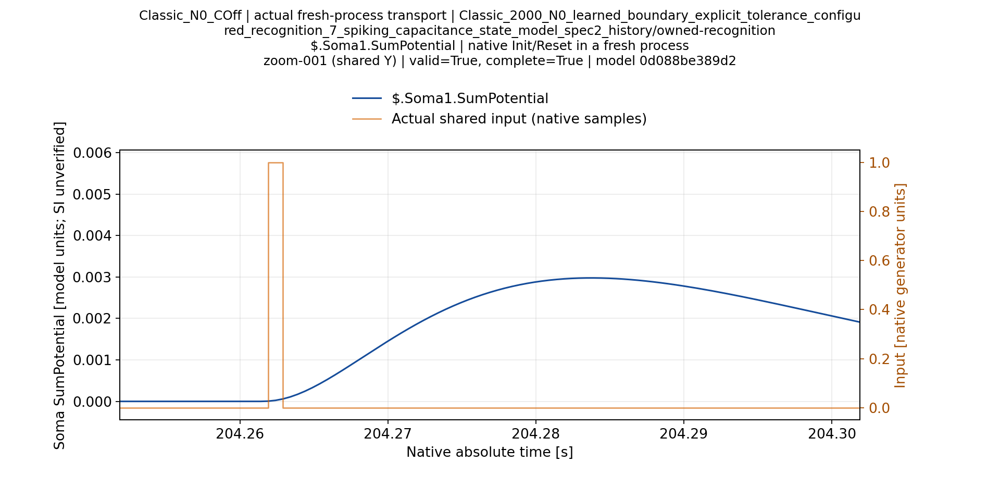
Classic_N0_COff $.Soma2.SumPotential overview
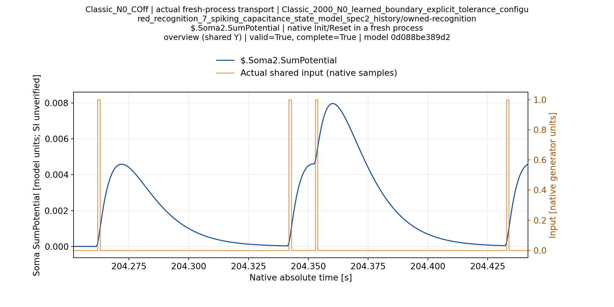
Classic_N0_COff $.Soma2.SumPotential zoom-001
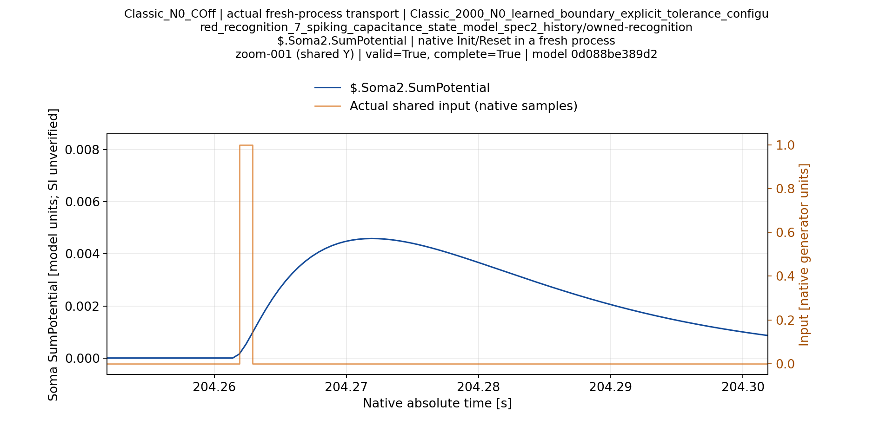
Classic_N1_COn $.Soma1.SumPotential overview
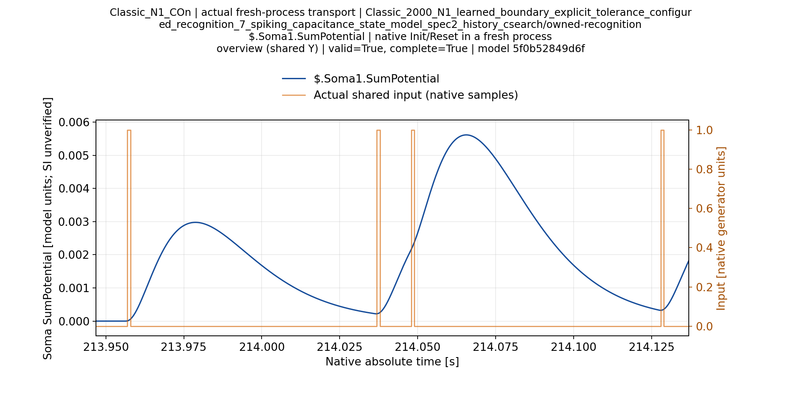
Classic_N1_COn $.Soma1.SumPotential zoom-001
Classic_N1_COn $.Soma2.SumPotential overview
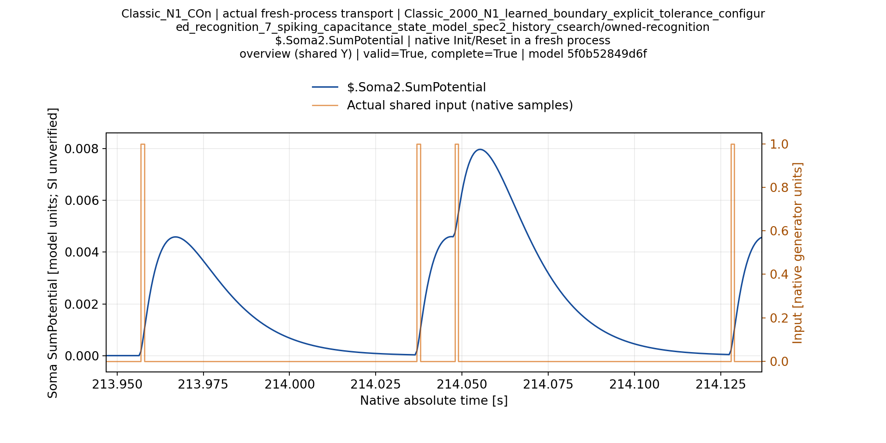
Classic_N1_COn $.Soma2.SumPotential zoom-001
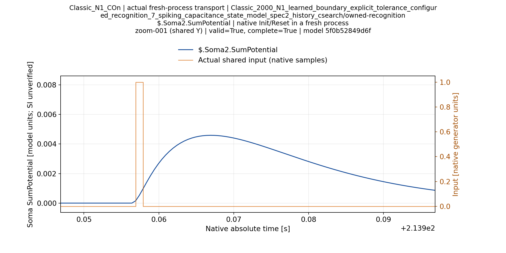
Classic_N1_COff $.Soma1.SumPotential overview
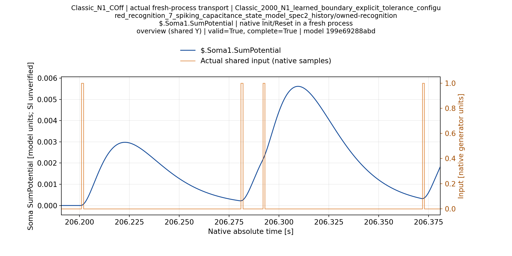
Classic_N1_COff $.Soma1.SumPotential zoom-001
Classic_N1_COff $.Soma2.SumPotential overview
Classic_N1_COff $.Soma2.SumPotential zoom-001
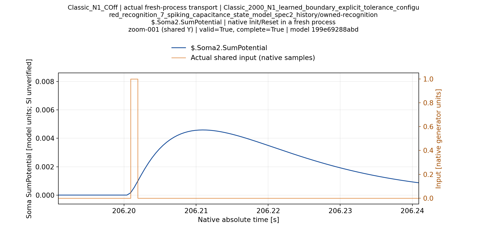